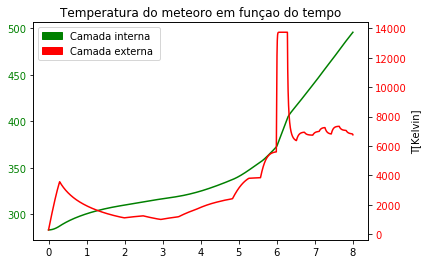

Mapeamento da temperatura interna de um Meteoro - 1° Semestre (2017.1)
Modelagem e Simulação do Mundo Físico - Professor Fábio H.
Proposta:
Os alunos tinham a tarefa de criar um modelo para um sistema térmico ou farmacocinético, utilizando-o para realizar algum tipo de análise do modelo (ou seja, responder a uma pergunta explicativa, preditiva ou de parametrização do sistema escolhido). O modelo equacionado deveria ser simulado com o auxílio de um computador e, por fim, os alunos deveriam elaborar um cartaz explicativo com seu modelo, equações, validação do modelo e resultados.
Resumo:
Motivadas pela teoria da panspermia cósmica - hipótese de que a vida originou-se a partir de um meteoro que transportava em seu núcleo algum organismo primitivo - decidimos analisar a temperatura interna de um meteoro enquanto ele descende para a Terra. Monitorando temperatura interna e extena do meteoro em função do tempo, procurou-se analisar em qual situação isso seria viável, variando a velocidade inicial do meteoro e, para isso, utilizou-se como referência o meteoro Lost City.
Ler mais